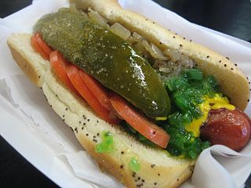
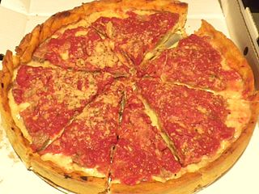

Being a large, diverse city Chicago has food from many different cultures.
Despite this diversity the two dishes that Chicago is known for are American.
They are the Chicago style hot dog and Chicago style pizza.

A Chicago style hot dog - A boiled or steamed all beef
hot dog on a poppy seed bun topped with yellow mustard, chopped onion,
tomato, relish, a pickle spear, celery salt and optionally sport peppers. Never ketchup.

Chicago style pizza - Deep dish pizza with a tall,
thick crust and a large amount of cheese. The sauce is over not under
the cheese and is chunky.